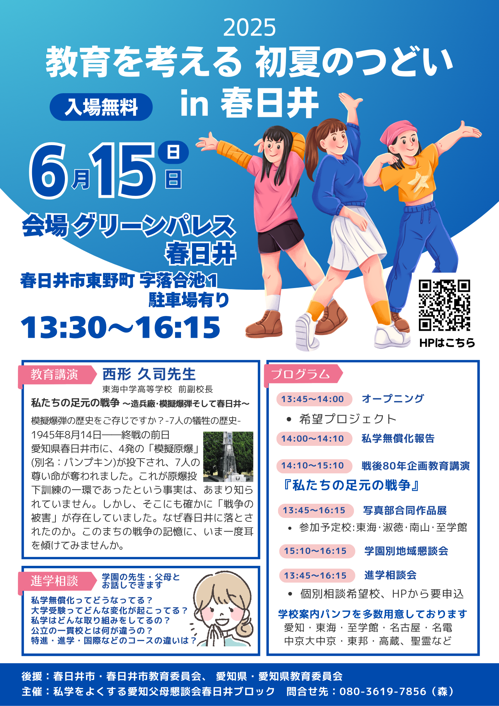

2025 教育を考える
初夏のつどい in 春日井
開催情報
日時：2025年6月15日（日）
13:30〜16:15
会場：グリーンパレス春日井
（春日井市東野町 字落合池1）
[MAP]
入場料：無料（駐車場あり）
教育講演
講師：西形 久司 先生
（東海中学高等学校 前副校長）
テーマ：私たちの足元の戦争
～造兵廠･模擬爆弾そして春日井～
模擬爆弾の歴史をご存知ですか？1945年8月14日、終戦の前日、愛知県春日井に「模擬原爆」（別名：パンプキン）が投下され、7人の尊い命が奪われました。これは原爆投下訓練の一環だったとも言われています。
実際に何が起きていたのか、戦争の記憶をたどりながら、今を生きる私たちに問いかけます。
プログラム
- 13:45〜14:00オープニング・希望プロジェクト
- 14:00〜14:10私学無償化報告
- 14:10〜15:10教育講演『私たちの足元の戦争』
- 15:10〜15:45写真部合同作品展（東海・淑徳・岡崎・至学館）
- 13:45〜16:15学園別地域懇談会・進学相談会（個別相談：要事前申込）
進学相談・学園懇談会
学園の先生・保護者とじっくり話せるチャンス！
個別相談には事前申込が必要です。進路に関するさまざまな質問にお答えします。
- 私学無償化ってどうなってる？
- 大学受験ってどんな進学先がある？
- 私立？公立？どちらが合ってる？
- 特徴・進学・国際などコースの違いは？
▶ 相談申込はこちら
